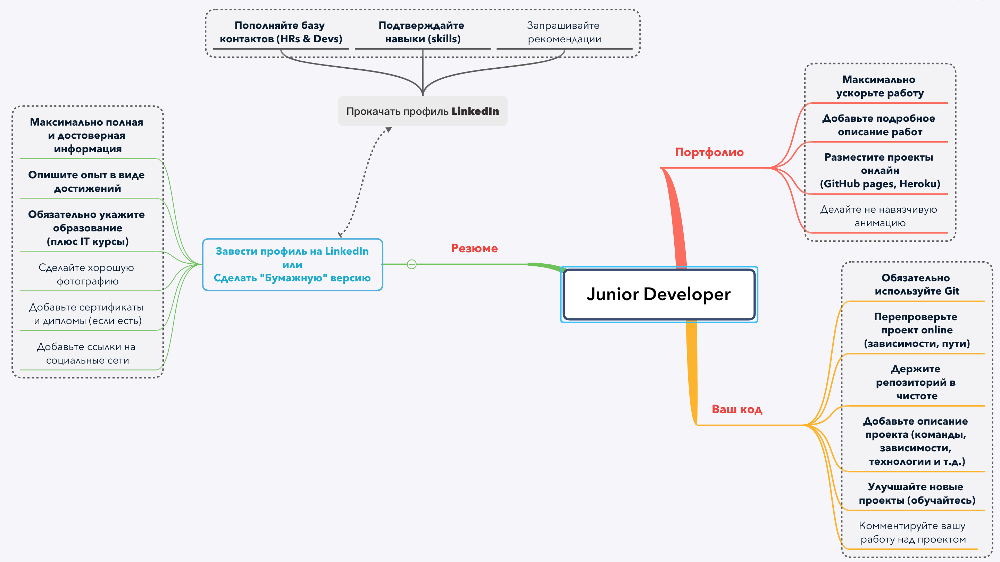

- Geekbrains курс JavaScript. Уровень 1 • 05.10.2020 MSK
- github Ссылка на акк VitalyM87
- github General frontend FAQ
- Лучший учебник на JavaScript на русском языке — Кантор
- Английская версия поддерживается автором в более актуальном состоянии. Сразу дается ES6, убрано всякое говно мамонта
- Канал Code Dojo (рус) – относительно неплохие видео по ЕС6+, хотя все это есть и у Кантора. Есть немного реакта, редакса и ангуляра
- Codecademy intro и Sololearn JavaScript Tutorial - бесплатное интро в жс. На
sololearn дают сертификат (бесполезный).
- Coursehunters - скринкаст egghead, популярно и кратко о прототипах, всего 30 минут, ES6.
- Udemy, "The Complete JavaScript Course" - неплохой платный курс
- Treehouse и Codeschool — тоже интерактивные курсы, платные.
- Канал funfunfunction - можно найти объяснение многих сложных для новичка штук – async/await, bind и this, рекурсия, каррирование.
- Канал LearnCode.academy — очень годный канал. Смотреть ES5 и ES6.
- Продолжаем читать Кантора: заканчиваем первую часть, читаем DOM, события. Материалы касательно работы с графикой можно опустить.
- Курс "JavaScript Algorithms and Data Structures" на freecodecamp – практическое дополнение к Кантору. На задачах в разделах "Basic/Intermediate Algorithm Scripting" можно
применить прочитанное в учебнике. Плюс – эти задачи часто попадаются на собеседованиях.
- Codewars – тоже про решение задач. Для саморазвития можно смотреть решение на других языках.
- Канал Sorax (рус) – очень клевый канал по "олдскульной ванилле" (ES5, прототипы и прочие прелести жизни). Алярм: может закипеть мозг, объясняет очень быстро и четко, никаких
вам "переменная это коробочка с данными"
- Coursehunters/Udemy, "100 Algorithms Challenge" - интро в алгоритмы
- Coursera – неплохой ресурс, но почти все платно, нуждающиеся могут поискать конкретные курсы на торрентах (они есть).
- Codeschool – аналогично
- JS the Right Way (есть версия на русском) – невообразимо объемный гайд: книги и статьи для изучения, описание фреймворков, стайлгайды и т.п. Рекомендуем ознакомиться
- /r/ javascript – реддит, для любителей
